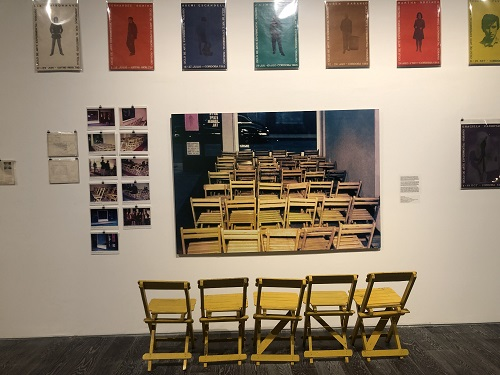

Norberto Puzzolo
1968
El proceso de "desmaterialización" de las obras de arte que muchos artistas llevaron a cabo a lo largo de la década de 1960 implicó tanto un pasaje desde las técnicas tradicionales hacia la utilización de objetos cotidianos o industrales como el uso del espacio en ambientaciones, o en la participación del espectador en diversas acciones y experiencias. En la Argentina y en LatinoAmérica, este proceso estuvo ligado a la progresiva vinculación de la práctica artística con la acción politica. A fines de mayo de 1968, la ciudad de Rosario fue sede del Ciclo de Arte Experimental, autogestionado por el Grupo de Artistas de Vanguardia en un pequeño local alquilado de una galería comercial. Esta elección daba cuenta de una voluntas explícita de crear un espacio alternativo a los circuitos artísticos tradicionales. Cada quincena, uno de sus integrantes proponía allí una experiencia. El hilo conductor entre ellas era el trabajo sobre el público como materia principal de la propuesta artística.